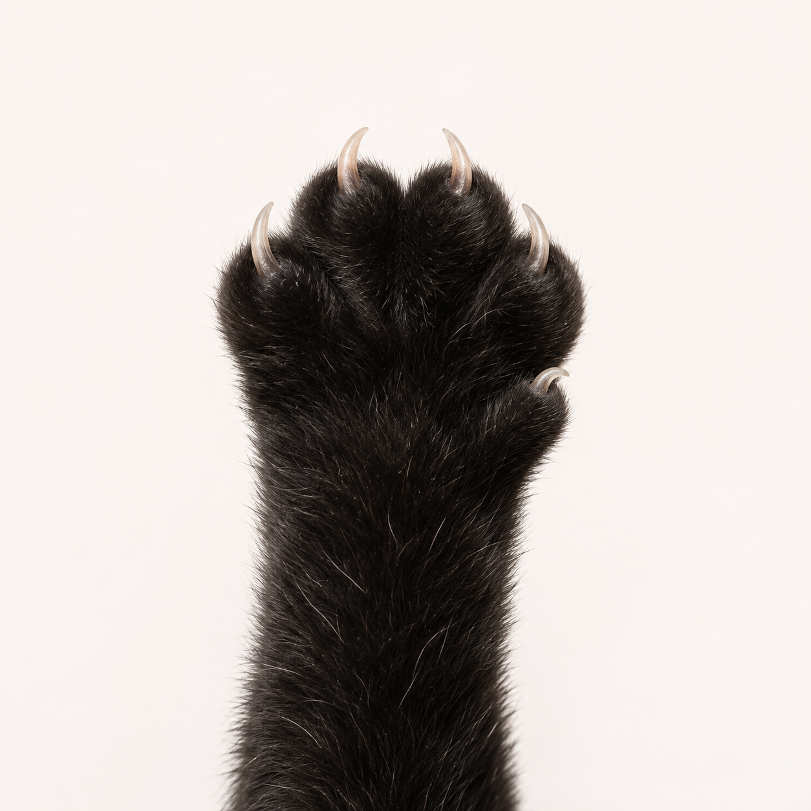

THE REAL FUR DIRECTION
Fur in the round.
A complete paw, with rounded toes, curved claws and a soft coat. Turn it over to see the pads.

LOADING THE 3D PAWDRAG TO TURN · PINCH TO ZOOM01
Five toes
Four forward toes and the smaller inner toe bearing the dewclaw.
02
A complete underside
Individual toe pads, the central pad and the separate wrist pad.
03
Fur with depth
Fine tapered strands wrap around the paw and catch the light as it turns.